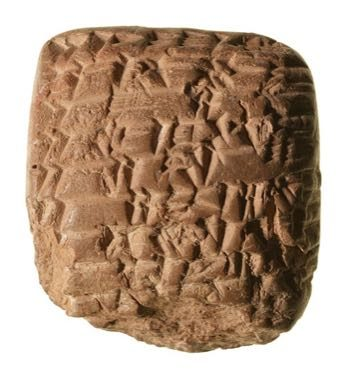
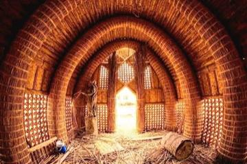
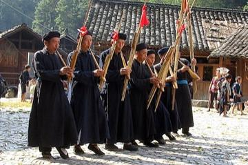
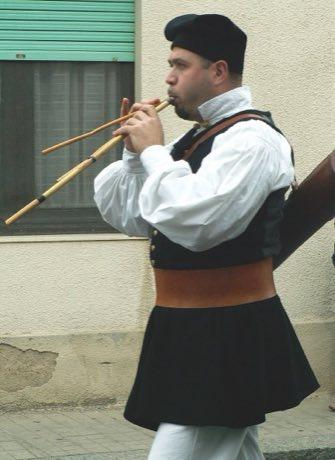
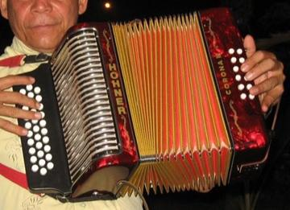
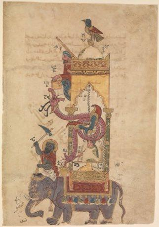
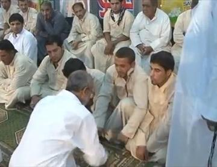

Home / Living Traditions / Mesopotamia, Levant and Arabia
Encyclopedia ID 1260
Cuneiform Clay Tablet Scribe
Also known as Cuneiform · مسمارية


Press a reed stylus into wet clay at the right angles to form wedge signs and complete a record tablet before it dries.
Heritage note
Part of the living heritage of Iraq.
Origins
A living tradition passed from person to person; it is not tied to a single dated origin. It belongs to the cultural world of Mesopotamia, Levant and Arabia.
Sources
Related entries

Mudhif reed-arch house
Iraq · Crafts and making
Mijwiz Double Clarinet
Lebanon +3 · Musical instrumentsPlay preview · in the Music & Dance of the World app
Khene
Laos · Musical instruments
Lusheng
Worldwide · Musical instruments

More from Iraq

Al-Jazari water-clock contraptions
Iraq · Puzzles and mind games


Santur Hammer Strings
Iran +3 · Musical instruments